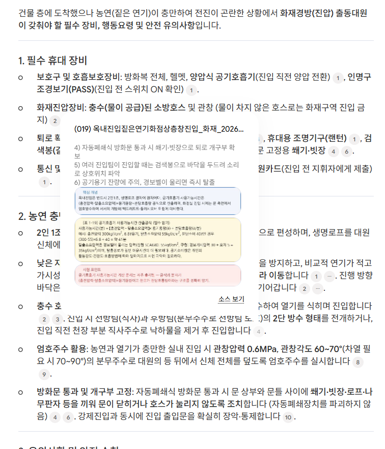
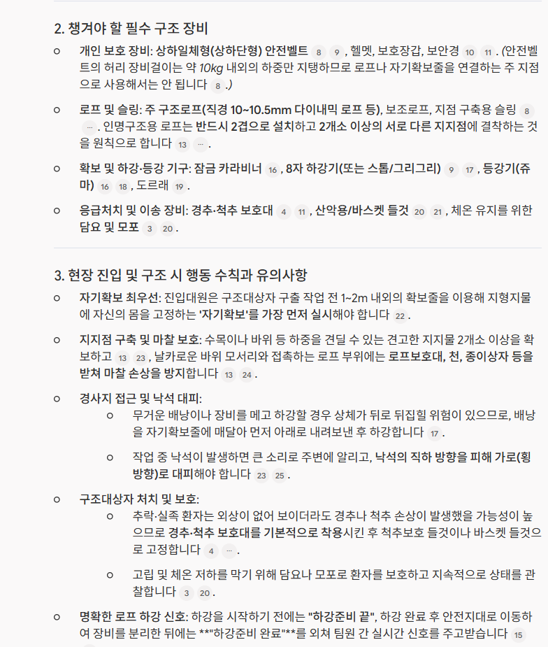
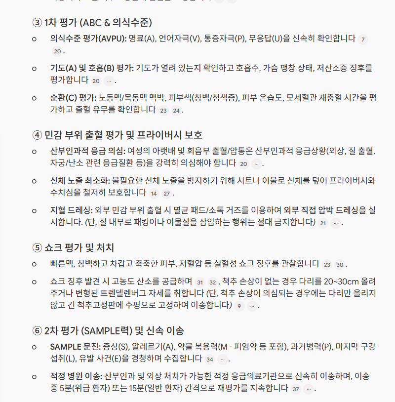

출동전
청라디월팰리스건물 11층, 키즈카페 , 다량 연기가 보인다,
(화재경방 출동대원, 챙길 장비, 행동과유의사항)
(화재경방 출동대원, 챙길 장비, 행동과유의사항)
현장 대응부터 소방 법령까지, 6개 분야를 한눈에 살펴보세요.
현장대원이 누구인지, 어떤 답이 필요한지 알려주지 않으면
출동대원의 질문에도 일반 시민을 위한 안내가 나올 수 있습니다.
화재 의심 상황 – 즉시 대응 필요
“지금 현장에서 직접 목격한 상황인가요, 아니면 출동 지령 내용을 전달한 건가요?”
이미 출동 중인 대원에게, 다시 ‘119 신고’를 안내합니다.이 사례에서는 질문자의 역할이 전달되지 않아, 대원이 원하는 장비·행동요령 대신 일반적인 신고·대피 안내와 추가 확인 질문이 나왔습니다.
사용자가 프롬프트 작성법을 몰라도, 로그인 후 사전 설정한 역할과 필요한 답변 항목이 질문에 함께 전달되도록 설계했습니다.
매번 “나는 누구이고, 어떤 답을 원하는지” 설명하는 부담을 줄입니다.
연기로 전진하기 어려운 상황을 질문한 NotebookLM 답변 캡처입니다. 문장 옆 출처 번호와 자료 미리보기를 함께 확인할 수 있습니다.

위 내용은 제공된 GPT 답변 사례를 바탕으로 한 비교입니다. 일반 AI의 답변은 모델·설정·질문 조건에 따라 달라질 수 있으며, 역할과 요구사항을 직접 설정하는 것도 가능합니다. 이 앱은 해당 설정을 사용자가 매번 작성하지 않도록 제공하는 데 차이가 있습니다.
구조대원의 역할을 함께 전달하면, 필요한 구조 장비와 현장 행동지침을 확인할 수 있습니다. 아래 답변에서는 ‘자기확보 최우선’과 ‘지지점 구축’이 출처와 함께 제시됩니다.

이는 사례를 바탕으로 한 가정입니다. 당시 대원들의 판단 근거는 확인되지 않았으며, AI 답변을 확인했을 때 실제 행동이 달라졌을지는 단정할 수 없습니다.
전문성이 필요한 구급활동에서는 답변의 근거가 무엇인지 더 명확하게 확인할 수 있어야 합니다. 아래는 같은 구급 상황에 대한 답변 캡처입니다.

이는 제시된 사례에 대한 가정이며, 민원이 발생하지 않았을 것이라고 단정할 수는 없습니다. 첨부 화면은 AI 답변 예시로, 전문적인 판단의 근거로 활용하려면 연결된 원문과 기관의 승인된 구급활동 지침을 확인해야 합니다.
위험물 검토, 소방시설 관련 법령 확인, 다중이용업소 안전관리 등 내근 업무에서도 자료를 찾고 검토하는 데 활용할 수 있습니다.
그럴듯한 답변이, 정확한 답변이라는 뜻은 아닙니다.일반 AI에 전문 분야나 법령을 물으면 개정 전 내용을 현재 기준처럼 안내하거나, 실제와 다른 내용을 사실처럼 답하는 ‘할루시네이션’이 발생할 수 있습니다. 이를 업무에 그대로 적용하면 큰 오류로 이어질 수 있습니다.
결국 해당 법령과 원문 자료를 다시 수기로 찾아, 내용과 적용 시점을 확인해야 합니다. 답변을 빨리 받아도 검증을 처음부터 반복해야 하는 번거로움이 남습니다.
자료 기반 AI도 오류가 발생할 수 있습니다. 법령 관련 판단은 출처 자료의 최신성, 개정·시행일과 현행 원문을 확인해야 합니다.
위험물 검토, 소방시설 관련 법령 확인, 다중이용업소 안전관리 등 내근 업무에서도 자료를 찾고 검토하는 데 활용할 수 있습니다.
그럴듯한 답변이, 정확한 답변이라는 뜻은 아닙니다.일반 AI에 전문 분야나 법령을 물으면 개정 전 내용을 현재 기준처럼 안내하거나, 실제와 다른 내용을 사실처럼 답하는 ‘할루시네이션’이 발생할 수 있습니다. 이를 업무에 그대로 적용하면 큰 오류로 이어질 수 있습니다.
결국 해당 법령과 원문 자료를 다시 수기로 찾아, 내용과 적용 시점을 확인해야 합니다. 답변을 빨리 받아도 검증을 처음부터 반복해야 하는 번거로움이 남습니다.
자료 기반 AI도 오류가 발생할 수 있습니다. 법령 관련 판단은 출처 자료의 최신성, 개정·시행일과 현행 원문을 확인해야 합니다.
위험물 검토, 소방시설 관련 법령 확인, 다중이용업소 안전관리 등 내근 업무에서도 자료를 찾고 검토하는 데 활용할 수 있습니다.
그럴듯한 답변이, 정확한 답변이라는 뜻은 아닙니다.일반 AI에 전문 분야나 법령을 물으면 개정 전 내용을 현재 기준처럼 안내하거나, 실제와 다른 내용을 사실처럼 답하는 ‘할루시네이션’이 발생할 수 있습니다. 이를 업무에 그대로 적용하면 큰 오류로 이어질 수 있습니다.
결국 해당 법령과 원문 자료를 다시 수기로 찾아, 내용과 적용 시점을 확인해야 합니다. 답변을 빨리 받아도 검증을 처음부터 반복해야 하는 번거로움이 남습니다.
자료 기반 AI도 오류가 발생할 수 있습니다. 법령 관련 판단은 출처 자료의 최신성, 개정·시행일과 현행 원문을 확인해야 합니다.
현재 준비된 자료는 화재·구조·구급·위험물·소방시설법·다중이용업입니다. 위의 여섯 분야에서 자료를 선택해 직접 질문해 볼 수 있습니다.
이 여섯 분야 외에도 필요한 업무 자료나 관련 법률을 주제별로 나누어 NotebookLM에 추가 등록하면, 질문하고 근거를 확인할 수 있는 범위를 넓힐 수 있습니다.